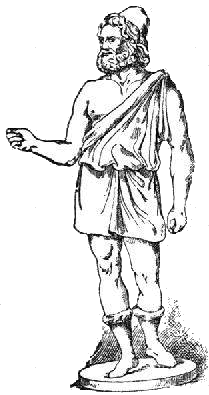

Forums galactiques > Assemblée Galactique : diplomatie officielle > Victoire Ultrémiste sur Necrid
| AlphonseHubert Respect diplomatique : 690  16/02 ETU 12:56  | Score : 2 Détails Lol, il prétend avoir tué Mannerheim, maintenant ?
Je signale que c'est sous les coups de l'AST que ce dernier s'est vu réduire à aucune planète... En ce qui concerne Necrid, sa mort est encore mystérieuse, et je trouve prématuré de la part des ultrèmes de la revendiquer. Peut-être un signe nous viendra-t-il pour expliquer l'événement ! | ||
| ultremis Respect diplomatique : 98  16/02 ETU 12:59 | Score : 2 Détails cest bien simple ca fait des mois que Necrid en prend plein la gueule car je l'avais voulu GNagnagna !
il est mort comme je lavais predit ! alphonse pubert votre tour viendra ... GGGAARRKKKkuiiiiik heudebert ! ps : ca ne devrait pas vous etonner beaucoup dautres sont tombé sous les coup ultreme et pas que des petits ex : l'atlante, necrid, overlord pendant tartifouette mannerhein face a brioche et maintenant necrid tombe, a ca cest sur cest pas l'ast qui a ce tableau de chasse ! ouaahaha | ||
| Vivien Lafontaine Respect diplomatique : 67  16/02 ETU 15:06 | Score : 1 Détails Guitell, mon cher, nous savons que les Ultrèmes ne sont pas des anges dans leur vie guerrière, mais que savez-vous de leur vie amoureuse?
Je sais que Napoléon a bombardé plusieurs systèmes pour sa bien-aimée, mais l'amour s'adapte aux personnes. Il reflète bien leur caractère. Combattez Napoléon au lieu d'insulter son couple, d'ailleurs qu'est-ce que Ta princesse vous a fait? Vous lui devez des excuses. | ||
| AlphonseHubert Respect diplomatique : 690 16/02 ETU 15:21 | Score : 3 Détails Non, l'AST se contentera de Ta Brioche, Mannerheim et Vlad Ivostock III.
C'est sûr que c'est pas glorieux, mais faut dire que nos ennemis sont des cibles nettements moins intéressantes ! | ||
| ultremis Respect diplomatique : 98 16/02 ETU 16:31 | Score : -2 Détails porte parole d'ultremis :
heu vlad ivostock III n'est pas mort mon cher, il ne joue pas depuis environ 4 mois alors si vous annoncez votre victoire maintenant c'est que vous etes vraiment nul a chier au combat et n'essayez pas de me contre dire je sais de koi je parle (c'est mon frero). mannerhein c'est pas vous qui lavez tué, c'est brioche et brioche vous ne l'avez a ebranlé une seul seconde il s'est suicidé pour ce reconvertir en napoleon briochon premier pour des raisons tactiques. et puis si vous les aviez abattu ce qui est faux, je pense pas qu'on puisse dire qu'elles sont ininteressantes puisqu'elles ont elles meme abattu de vos ex alliés que vous trouvez forts interessants... (je parlais pour brioche et vlad bien sur, mannarhein est un cretin impuissant) Votre tableau de chasse est bien degarnit tout a coup... Alphonse pubert menteur officiel et le plus pitoyable des membres de l'ast (cest pour dire ...) | ||
| AlphonseHubert Respect diplomatique : 690 16/02 ETU 16:39 | Score : -1 Détails Très bien, jouons à ça :
L'Atlante ce n'est pas les ultrèmes, c'est Imothep. OverLord, je l'ai tué moi-même sous plusieurs avatars (notamment la première fois lorsque j'ai sauvé la vie à Obiwan, ancêtre du défunt Briochon). Necrid, ça fait deux mois qu'il n'est plus présent dans la vie galactique. Et Mannerheim, c'est également moi-même. Ca fait zéro à zéro, comme tableau de chasse... La différence entre l'ultrémisme et l'AST, c'est que l'AST n'a pas que ses victoires militaires pour survivre. L'AST a un Idéal à réaliser. | ||
| Mannerheim Respect diplomatique : -10  16/02 ETU 16:45 | Score : -4 Détails Bouffons malhabiles et grandiloquents, comme vous pouvez le constater, je ne suis pas mort, j'avais songé sérieusement à arrêter le jeu ( certains ont une vie, une vraie ) car les opérations militaires me prenaient trop de temps, j'ai donc commencer à distribuer empire et ressources à mes fidèles alliés, de là à en conclure une victoire, seul un être aussi pathétiquement déconnecté du réel peut le croire.
Mannerheim n'est pas mort, et il n'est pas dit qu'il ne se réveille pas sous peu... et dites-vous bien que vivant bien après la mort du cocaïnomane brioché, il le sera tout autant afin de danser le fox-trot sur votre ignoble carcasse | ||
| AlphonseHubert Respect diplomatique : 690 16/02 ETU 16:49 | Score : 1 Détails Dites donc, les inutiles se ressucitent les uns les autres, à ce que je vois...
| ||
| ultremis Respect diplomatique : 98 16/02 ETU 16:55 | Score : 1 Détails porte parole d'ultremis :
sauf que vous vous mentez ! la preuve cest que vous n'avez rien dementi la premiere fois c'est seulement quand je vous met en doute que vous adoptez votre strategie minable et grotesque... pauvre garcon ... vous vraiment dune malhonneté sans borne d'autant plus que tout le monde sait que les ultremes sont hyper actifs au combat et que vous etes mou du glan. la preuve vous etes mis en echec par un poignée d'ultremes alors que vous etes beaucoup plus nombreux, mais bon vous etes minable,on vous en veut pas rassurez vous. On va juste vous broyer ! A 5 ou 6 on a broyer les 20 meilleurs autres commandants tous dans les 30 premiers du classement pendant tartifouette, alors n'imaginez une seule seconde que votre ramassi fiotes bourrées d'espions chiatiques au combat (c'est ainssi que notre prophete a qualifié l'ast lors de sa derniere crise d'urticaire) va nous faire trembler... Pubert vous avez menti une deusieme fois et aucun commandant n'est assez naif pour vous croire. mannerhein meme si vous n'avez pas quitté le jeu brioche vous a ecartelé, par contre pubert le grand combatant soit disant tombeur de mannrhein n'est meme pas mentionné comme c'est bizar ! | ||
| kuririn Respect diplomatique : 10  16/02 ETU 17:02 | Score : 1 Détails Je crois que nous ne saurons jamais qui a été tué par qui...
Entre les mensonges de l'AST(dévoilé par les ultremistes) et les mensonges prononçaient par les ultremistes(dévoilé par les ultremistes)nous les jeunes commandants nous ne savons plus qui croirent.De plus, chaques partis pronnent la paix mais personne n'est prêt a faire de compromis. S'il vous plait, j'appelle tous les protagonistes de la guerre à se calmer et à ne plus chercher à nous montrer qui est le meilleur, même verbalement, pendant que les autres commandants cherchent des possibilités pour la paix. excusez moi de mon language, mais on en a "marre" de vous entendre repeter les mêmes choses qui ne font que envenimer les débâts. Cordialement Kuririn. | ||
| Shoubenigourath Respect diplomatique : 119  16/02 ETU 17:03 | Score : 1 Détails Soit sérieux. Personne ne recherche la paix. Ni les Ultrème, pour qui c'est normal, ni l'AST, pour qui c'est nécessaire.
Il n'y a qu'un seul type de personne qui recherche la paix ici, et c'est les indépendant et les hydropathes. Aucun des deux n'a le pouvoir pour faire cesser la guerre. | ||
| Hephaïstos Respect diplomatique : 44  16/02 ETU 17:27 | Score : 1 Détails DE toute façon je pense qu'il est impossible de faire régner la paix dans une galaxie..
Des qu'un commandant est suffisamment puissant la cupidité l'envahit.. | ||
| AlphonseHubert Respect diplomatique : 690 16/02 ETU 17:38 | Score : -1 Détails C'est donc qu'il faut limiter la puissance des commandants.
| ||
| titan14 Respect diplomatique : 187  16/02 ETU 18:01 | Score : 2 Détails Je persiste à croire que la bonne foi et la crédibilité d'un commandant ne sont pas forcément inversement proportionnelles à sa puissance
Il existe des commandants puissants qui ont encore une sensibilité à visage humain et un profond respect de leurs homologues Ceci ne veut pas dire qu'il ne faille pas partager les richesses en respectant si possible le désir d'expansion raisonnée de certains On peut se développer en respectant son prochain et sans forcément tout détruire autour de soi (notion de "développement équitable" à creuser peut être) | ||
| Imothep Respect diplomatique : 571  16/02 ETU 18:28 | Score : 1 Détails Cher commandant Shoubenigourath je suis d'accord avec tout ce que vous avez dit, sauf sur un point :
Le Parti de la Paix Galactique a tout a fait les moyens militaires et politiques de faire cesser cette guerre, aux cotes des hydropathes et surtout de l'action de Djil que nous soutenons en pensees et en actes. Mais nous n'avons pour volonte que de remporter de batailles que pacifiques c'est a dire democratiques. Seules les urnes ont pour nous la validite suffisante pour instaurer une autorite legitime dans cette Galaxie. Autorite juste, ferme et pacifique, appliquant un systeme de solidarite universelle fondee sur la redistribution, que ni les ultremes, ni l'AST au pouvoir n'ont mis en place. Ces derniers ont detourne l'impot galactique et racontent dfes balivernes aussi grosses que leur coalition pour justifier cet acte qu'ils n'ont toujours pas rachete bien qu'ils possedent Newdeun, Capitale Galactique, depuis pres d'1 mois... Et NOUS EXIGEONS A NOUVEAU la mise en place rapide des elctions sur lesquelles tous les commandants et toutes les coalitions de la Galaxie reunie se sont prononces. Maintenant je salue la memoire du commandant Necrid qui, pour coriace qu'il fut contre moi en d'autres temps, a toujours et continuera par dela les cieux a recevoir tous mes respects. | ||
| Shoubenigourath Respect diplomatique : 119 16/02 ETU 18:31 | Score : 1 Détails Moi aussi je vous salue Imhotep, vous qui continuez de respecter un commandant par delà la mort. Certain n'ont encore jamais respecter un commandant vivant.
| ||
| lord bloody Respect diplomatique : 50  16/02 ETU 20:00 | Score : 0 Détails eh bien quand commencera enfin les élections ?!?
paix a ton âme Necrid. je tuerai tout ceux qui t'aurons fait du tort ainsi qu'a tout mes amis. | ||
| Evangelion Respect diplomatique : 28  16/02 ETU 20:03 | Score : 3 Détails Bonne chance lord bloody . Car tu va en avoir besoin .
Salut Nécrid . | ||
| dragonfire17 Respect diplomatique : 34  16/02 ETU 21:47 | Score : 1 Détails je pense que l'on doit respecter tout les commandant mort ou vivant car ils on tous droit à autant de respect que nous je respecte donc Necrid.
| ||
| shadow17 Respect diplomatique : 23  16/02 ETU 23:22 | Score : 1 Détails Que ton ame repose en paix Necrid.
Nous te RESPECTONS et nous te RESPECTERONS pour toujours. Le Commandant Shadow17 |
Forums galactiques > Assemblée Galactique : diplomatie officielle > Victoire Ultrémiste sur Necrid